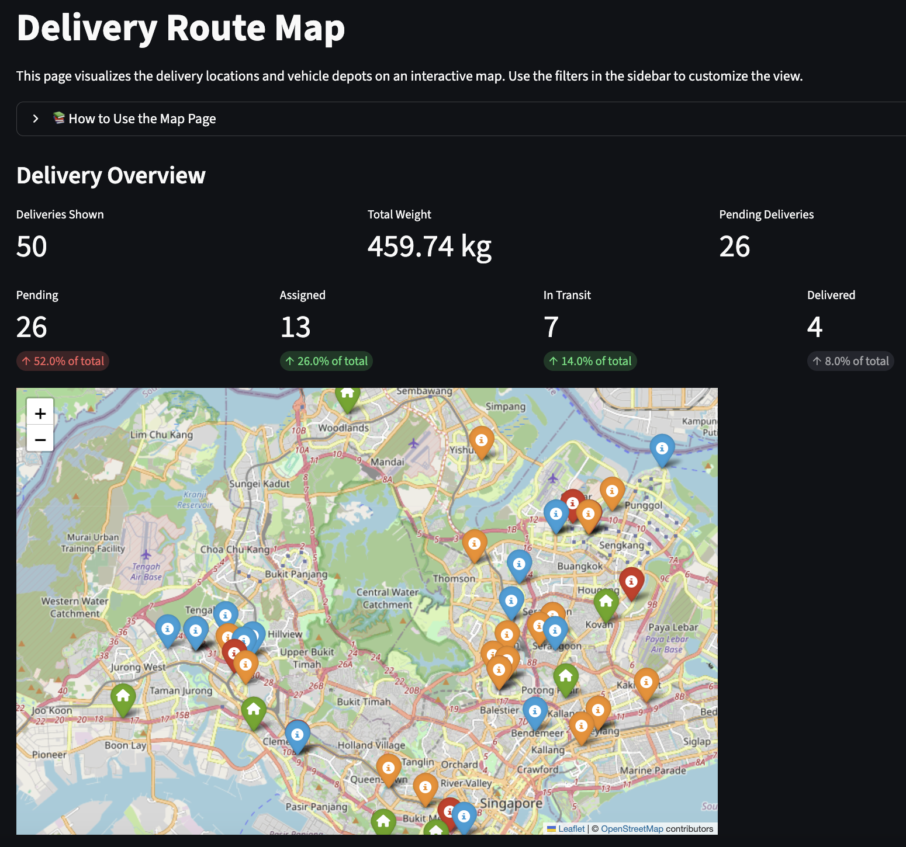
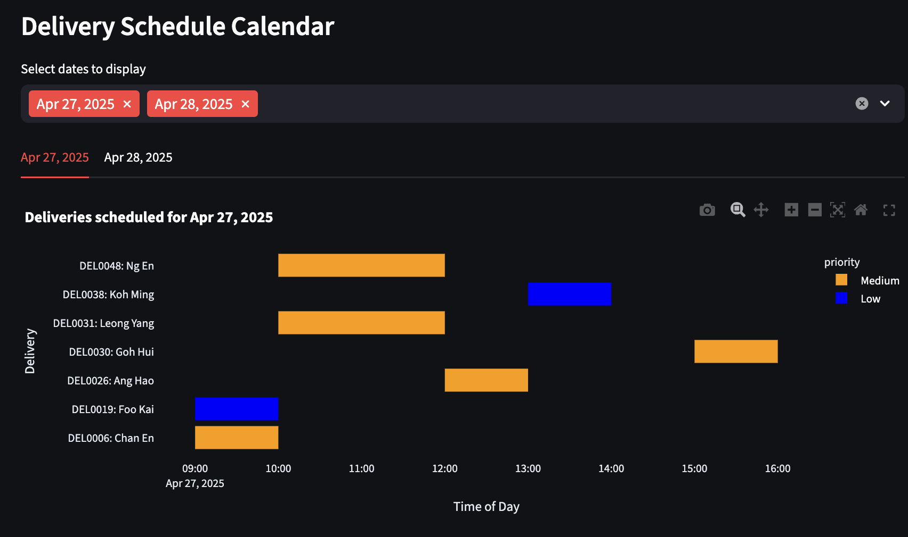
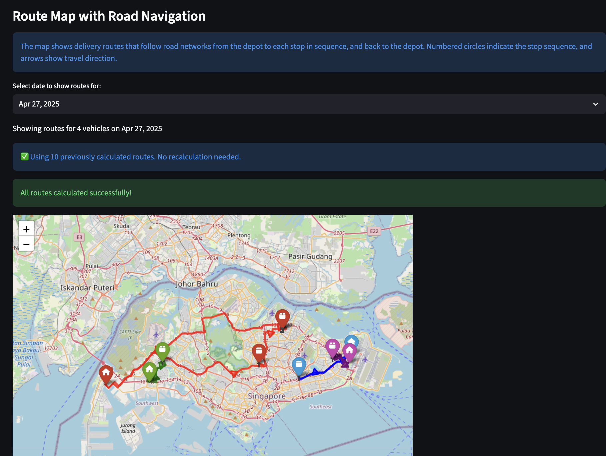
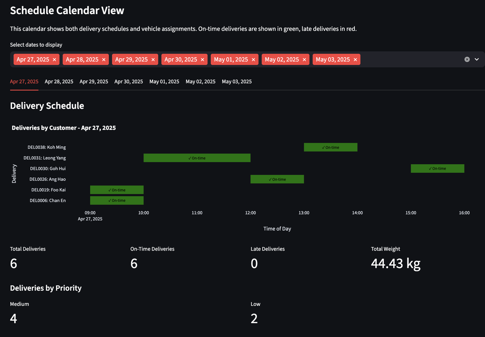

Designing a Practical Last‑Mile Delivery Planner with OR‑Tools and Streamlit
Effective last‑mile delivery planning is a balance of operational constraints and geography. This project turns that challenge into a focused, reproducible application: a Streamlit interface backed by Google OR‑Tools for route optimization, with road‑network travel times sourced from APIs (Google Maps Directions/Distance Matrix or OSRM) and results visualized on an interactive map.

Problem Statement
Last‑mile operations rarely match the simplicity of a whiteboard sketch. Vehicles differ in capacity and shift hours, customers require deliveries within specific time windows, and travel times vary by time of day and route conditions. Manual planning, static routes, or lightweight heuristics do not scale with growing demand or volatility. The result is missed windows, excess mileage, and operational strain.
This project addresses that gap with a constrained, data‑driven planner that respects time windows, capacity, depots, and traffic patterns—producing plans that are both defensible and easy to review.
Value Proposition
Route Optimization
- Solves the Vehicle Routing Problem (VRP) to determine efficient routes
- Incorporates constraints like time windows and vehicle capacity
- Prioritizes deliveries based on importance and urgency
Map Visualization
- Displays optimized routes on an interactive map
- Highlights delivery stops and depot locations
- Provides detailed route information and statistics
Calendar View
- Calendar-based schedule for deliveries
- Shows delivery timeline and workload distribution
- Helps manage delivery schedules efficiently
Interactive Dashboard
- Real-time delivery status monitoring
- Data filtering and visualization options
- Customizable optimization parameters
Features and Pages
Map Page
Interactive map showing routes, depots, and delivery clusters
The map provides a clear, geographic view of your operation. Delivery locations and depot positions are drawn on an interactive base map, with filters in the sidebar to tailor the display to specific dates, vehicles, or status. At a glance, you can see how stops cluster, how routes traverse the network, and where potential bottlenecks may form. Key summary metrics (number of deliveries, assigned vs. unassigned, and late/on‑time breakdowns) accompany the map so you can correlate what you see with operational reality.
Real‑time operational view: routes by color, stop markers with popups, and depot locations.
When routes are generated, the map highlights each vehicle’s path with distinct colors and markers. Popups reveal stop details—ETA, time window, priority, and demand—so you can review the sequence on the ground. A delivery schedule calendar complements the map by showing time spans across the day for each delivery, making it easy to spot overlaps, slack, and potential conflicts.
- Displays optimized routes on an interactive map
- Highlights delivery stops and depot locations
- Provides detailed route information and statistics
Optimizer Page: Step‑by‑Step Guide
The optimizer assigns deliveries to vehicles to build efficient, feasible routes. Use the sidebar to set parameters, generate plans, review results, and iterate.
-
Set optimization parameters (sidebar)
- Select Delivery Dates: Choose the dates to include; select “All” to include all.
- Priority Importance: Higher values give more weight to high‑priority deliveries.
- Time Window Importance: Higher values enforce stricter adherence to delivery windows.
- Load Balancing vs. Distance: Higher values distribute deliveries more evenly across vehicles (less focus on pure distance minimization).
- Maximum Vehicles: Limit the number of vehicles available to the solver.
- Minimum Time Window Compliance: Set the minimum percentage of deliveries that must meet their time windows.
-
Generate routes
- Review current delivery statistics and vehicle availability.
- Click “Generate Optimal Routes” to run the solver.
- The algorithm assigns deliveries to vehicles based on your parameters and travel‑time source.
-
Review results
- Overall Performance: Assigned deliveries, vehicles used, time‑window compliance.
- Time & Distance Distribution: See how workload is spread across vehicles.
- Route Map: An interactive map per date; hover for details, filter by day.
- Calendar View: Delivery schedules by date. Legend: green = on‑time, orange = late, red = unassigned.
Fast optimization with clear KPIs, route metrics, and distribution summaries.
-
Adjust and refine
- Not enough vehicles? Increase the maximum vehicles allowed.
- Time windows not met? Decrease the time‑window importance or the minimum compliance target.
- High‑priority deliveries not assigned? Increase priority importance.
- Routes too unbalanced? Increase the load‑balancing parameter.
The route computation integrates road‑network travel times from Google Maps Directions/Distance Matrix or OSRM. The solver sequences stops to respect time windows, priorities, service times, and capacity limits while minimizing total travel time/distance.
Under the hood: API‑derived ETAs drive a VRP‑TW solver to compute the best sequence and duration.
Calendar view: visualize and tune by duration, distance, and package importance to balance operations.
Tip: Always click “Generate Optimal Routes” after changing parameters to apply updates.
Data, Briefly
Inputs are simple CSVs. Deliveries include IDs, coordinates or addresses, demand (weight/volume), and time windows. Vehicles include capacities, depot locations, and shift hours. Optional time‑of‑day matrices reflect traffic patterns for morning, midday, evening, and night. A locations index keeps coordinates aligned across matrices and outputs.
Optimization Approach
Below is a compact formulation that captures the core elements used by the solver and the optimizer’s tunable preferences.
Sets
$N = \{1,\dots,n\}$ customers, depot indexed as $0$.
$K = \{1,\dots,m\}$ vehicles.
Parameters
$q_i$: demand at customer $i$; $Q_k$: capacity of vehicle $k$.
$[a_i, b_i]$: time window at customer $i$; $s_i$: service time at $i$.
$c_{ij}$: travel distance (or cost) from $i$ to $j$.
$t_{ij}$: travel time from $i$ to $j$ (from Google/OSRM or matrices).
$w_i$: priority weight for customer $i$ (higher = more important).
$M$: a large constant for time‑window constraints.
$V_{\max}$: maximum vehicles allowed by the user.
$\alpha, \beta, \gamma, \lambda \ge 0$: user‑tunable weights for distance, lateness, load balancing, and unassigned penalties.
Decision Variables
$x_{ij}^k \in \{0,1\}$: 1 if vehicle $k$ travels from $i$ to $j$, else 0.
$T_i^k \ge 0$: arrival time of vehicle $k$ at node $i$.
$L_i^k \ge 0$: load on vehicle $k$ upon arrival at node $i$.
$u_i \in \{0,1\}$: 1 if customer $i$ is served by any vehicle, else 0.
$z_k \in \{0,1\}$: 1 if vehicle $k$ is used, else 0.
$\ell_i \ge 0$: lateness at customer $i$.
$W_k \ge 0$: working time proxy for vehicle $k$ (optional balance term).
Objective (multi‑term, user‑weighted)
$$ \min \; \alpha \sum_{k\in K}\sum_{i\in N_0}\sum_{j\in N_0} c_{ij} x_{ij}^k \; + \; \beta \sum_{i\in N} w_i\, \ell_i \; + \; \gamma \sum_{k\in K} (W_k - \bar W)^2 \; + \; \lambda \sum_{i\in N} w_i (1 - u_i) $$ where $N_0 = N \cup \{0\}$ and $\bar W$ is the mean of $W_k$ across vehicles (the balance term may be approximated or omitted in a purely linear model).
Objective intuition and UI links
Distance/travel cost: $\alpha \cdot \sum_{k\in K}\sum_{i\in N_0}\sum_{j\in N_0} c_{ij} x_{ij}^k$
- What it does: Rewards shorter routes (less distance/time).
- Turn it up when you want the solver to strongly prefer compact routes and fewer detours.
Lateness penalty: $\beta \cdot \sum_{i\in N} w_i \, \ell_i$
- What it does: Punishes arriving after a stop’s time window; $w_i$ makes high‑priority stops “hurt” more when late.
- Turn it up to push schedules to stay within windows, especially for important customers.
- UI link: Time Window Importance (and Priority Importance via $w_i$).
Workload balance: $\gamma \cdot \sum_{k\in K} (W_k - \bar W)^2$
- What it does: Evens out work across vehicles. $W_k$ is a vehicle’s total work (e.g., route time/distance); $\bar W$ is the average across vehicles.
- Turn it up to avoid one “hero” truck doing most of the work, even if it adds some distance.
- UI link: Load Balancing vs Distance (trade‑off vs $\alpha$).
Unserved penalty: $\lambda \cdot \sum_{i\in N} w_i \cdot (1 - u_i)$
- What it does: Penalizes dropping deliveries; $w_i$ makes skipping high‑priority stops very expensive.
- Turn it up to force serving more (or all) stops, accepting extra distance or more vehicles if feasible.
- UI link: Priority Importance (via $w_i$). Complements Minimum Time Window Compliance.
Vehicle limit
$\sum_k z_k \le V_{\max}$. Lower caps force consolidation; higher caps give slack to meet windows and reduce lateness.
$$\sum_{k\in K} z_k \le V_{\max}$$Working time proxy (optional, for balance term)
Encourages similar total work per vehicle. Driven by Load Balancing vs Distance.
$$W_k \ge \sum_{i\in N_0}\sum_{j\in N_0} t_{ij} x_{ij}^k \quad \forall k\in K$$Domains
Variable types and non‑negativity are fixed; parameters change costs and feasibility pressure, not domains.
$$x_{ij}^k \in \{0,1\},\; u_i \in \{0,1\},\; z_k \in \{0,1\},\; T_i^k, L_i^k, \ell_i, W_k \ge 0$$Assumptions
- Single depot; each route starts and ends at the depot.
- Deterministic travel times for a chosen time‑of‑day profile (or API snapshot).
- Service times are known and additive; no precedence constraints.
- Travel cost/time obeys triangle inequality (typical for road networks).
- Penalties reflect business preferences: distance, on‑time performance, balance, and priority.
Road‑Network Travel Times (Google Maps or OSRM)
Accurate ETAs require road‑network travel times, not straight lines. The app supports:
- Google Maps Directions API and Distance Matrix API: highly reliable routing and travel time estimates, with traffic modeling where available. Requires an API key, billing, and adherence to Google’s Terms of Service.
- OSRM: an open‑source alternative with public or self‑hosted servers. Useful for prototyping, offline scenarios, or cost control.
In practice, you can toggle between sources. For Google, configure your API key as an environment variable and select Directions/Distance Matrix for route and ETA computation. For OSRM, point to a table/route endpoint. The solver then consumes those times to produce realistic, feasible routes.
Limitations and Roadmap
This implementation uses precomputed or API‑fetched travel times but does not continuously adapt to unexpected incidents without a refresh. It assumes a single depot and simplified service times. For very large instances, time‑bounded solves may be preferable to guarantee responsiveness. Future extensions include multi‑depot support, driver breaks/skills, EV energy constraints, scenario comparison, KPI dashboards, and live re‑optimization triggered by events.
Summary
By combining an accessible Streamlit UI, OR‑Tools for optimization, and road‑aware routing data from Google Maps or OSRM, this project turns a complex planning task into a repeatable workflow. The result is an operational plan that reflects constraints and traffic reality, is easy to validate on a map, and can be deployed reliably across environments.
References
- JING HUI
- DATA SCIENTIST